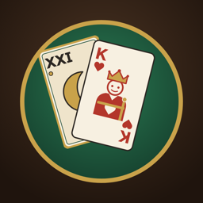

Tarock Stammtisch
Königrufen gegen den Computer · App für iPhone und iPad
Tarock Stammtisch ist Königrufen gegen drei Computergegner – komplett offline, ohne Konto, ohne Werbung. Rufer, Besserrufer, Solorufer, Dreier, Sechserdreier, Solodreier, Farbendreier, Farbensolo, Piccolo, Zwiccolo, Bettel, Ouvert und Trischaken, mit Prämien, Kontra, Re und Sub, nach den Regeln des Tarockcups und mit einstellbaren Wirtshaus-Varianten. Drei Stufen (Leicht, Mittel, Stark), Abrechnung nach jeder Partie, laufender Spielstand und Statistik über alle Abende.
Hilfe und Kontakt
Fragen, ein Fehler in einer Partie oder eure Hausregel fehlt? Schreib an walchwalch@gmail.com. Hilfreich ist die Partie-Nummer (im Menü ≡ am Tisch) und eine kurze Beschreibung, was passiert ist.
Häufige Fragen
Die Karten sind unfair verteilt!
Nein – die Karten werden mit dem echten Zufall des Geräts gemischt; keine Verteilung wird bevorzugt, und die Computergegner sehen nur ihre eigenen Karten. Schlechte Blätter kommen im Tarock einfach vor.
Was ist in der Gratisversion enthalten?
Rufer und Dreier gegen die Stufe Leicht, ohne Ansagen. Die Vollversion (einmaliger Kauf) schaltet alle Spiele, Prämien und Ansagen, die Stufen Mittel und Stark, die Tarif-Varianten und die vollständige Statistik frei – auf allen Geräten mit derselben Apple-ID („Kauf wiederherstellen“ in den Einstellungen).
Warum sagt die App, mein Zug war ein Fehler?
In der Stufe Leicht prüft die App nach jedem Zug, ob ein anderer deutlich besser gewesen wäre, und erklärt kurz warum. Das lässt sich in den Einstellungen abschalten.
Wo sind meine Spielstände?
Nur auf deinem Gerät. Durch Löschen der App werden sie entfernt.
Impressum und Offenlegung
Thomas Walch
Isbarygasse 20
1140 Wien
Österreich
E-Mail: walchwalch@gmail.com
Unternehmensgegenstand: Entwicklung und Vertrieb von Apps (Privatperson)